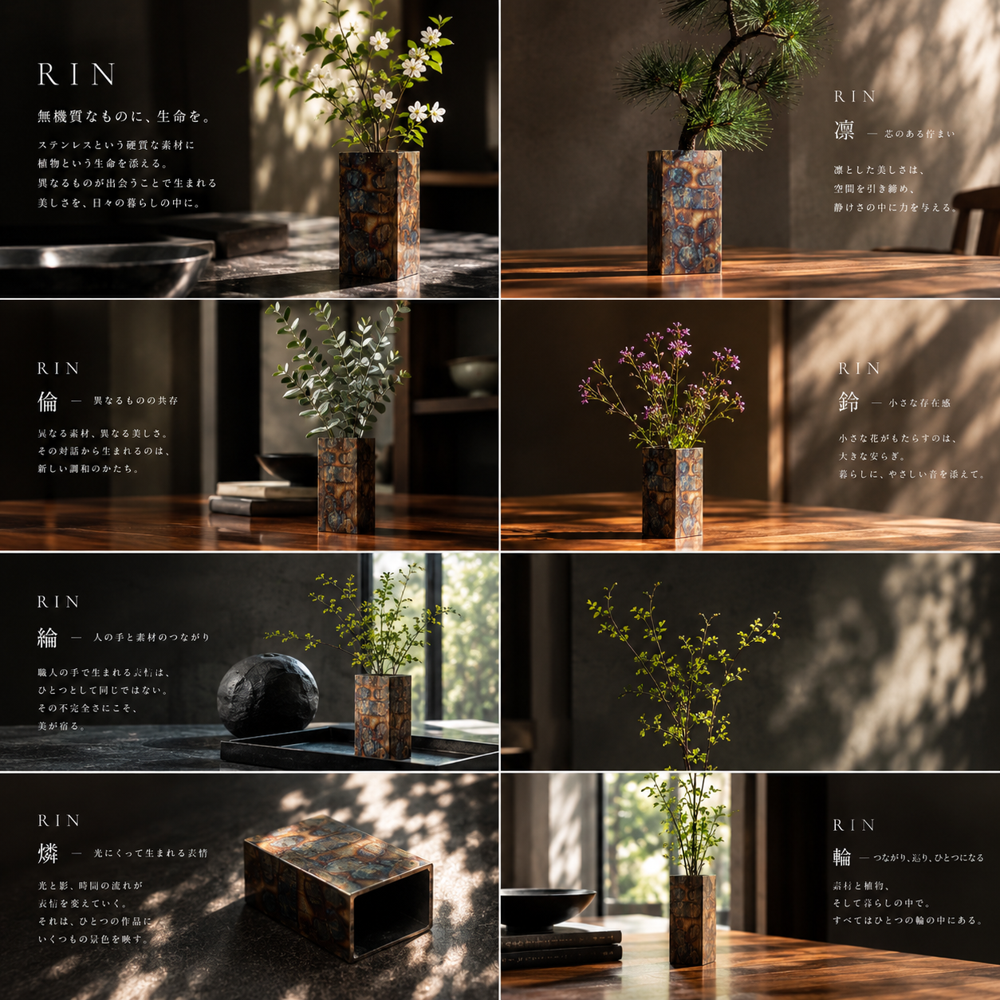
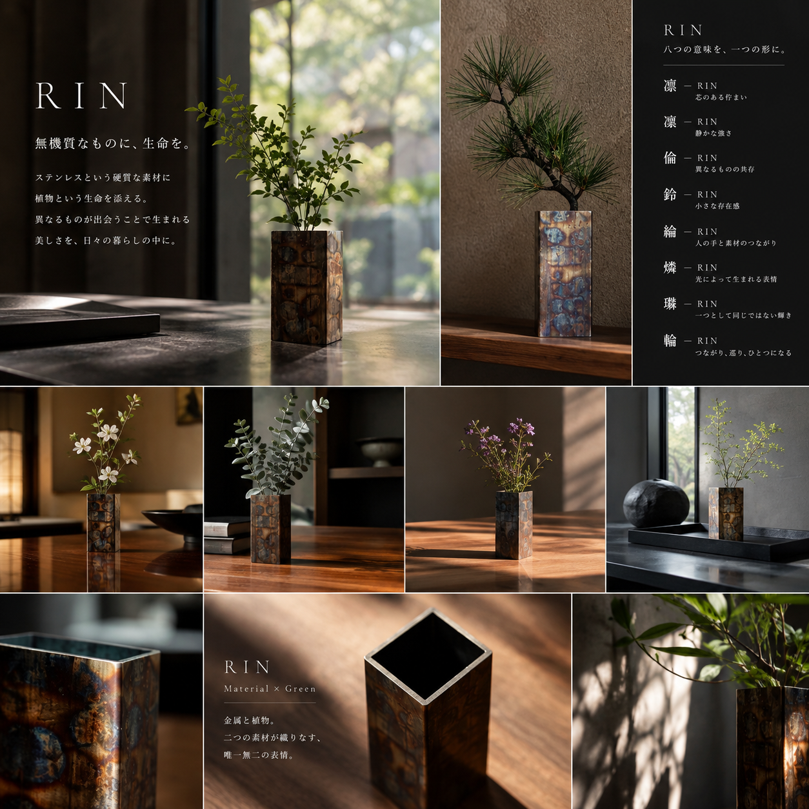
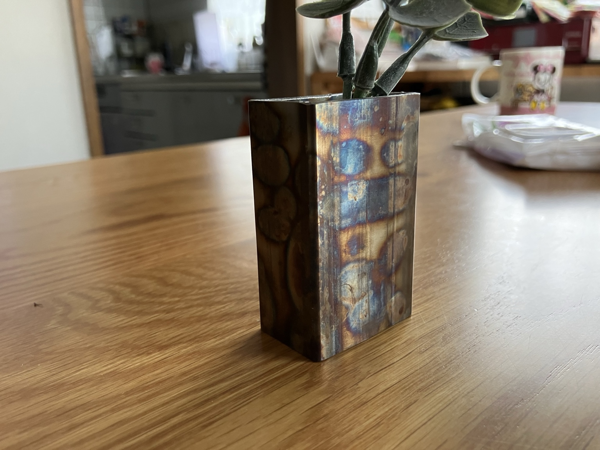
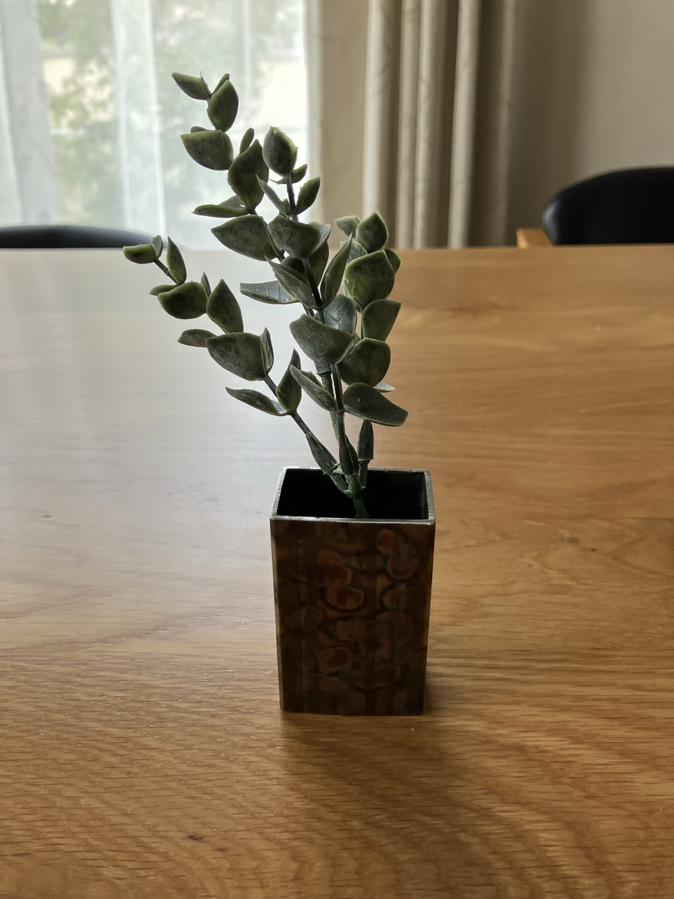
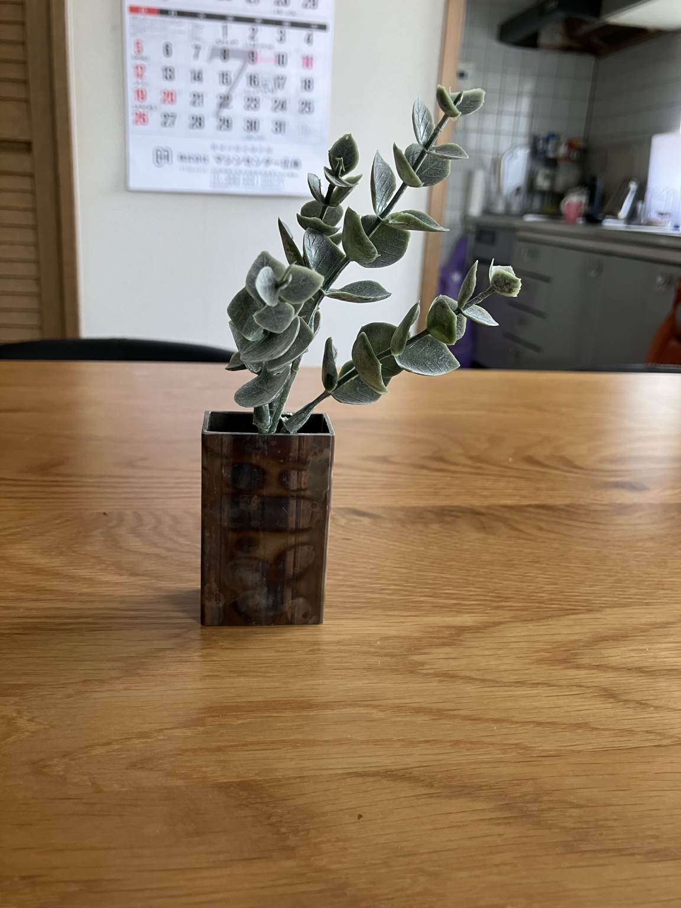

凛
RIN
芯のある佇まい。静かな強さを、形にする。
ステンレスという硬質な素材に、植物という生命を添える。
異なるものが出会うことで生まれる、美しさを暮らしの中へ。

金属の硬さ。植物のしなやかさ。
相反するように見える二つの素材を、ひとつの器に収める。
RINは、工業素材に残る熱や酸化、研磨の痕跡を「傷」ではなく、作品の個性として受け入れます。
RINという名前には、ひとつの答えではなく、八つの意味を重ねています。素材、光、植物、人の手。そのすべてが重なって、一つの作品になる。
芯のある佇まい。静かな強さを、形にする。
静かな強さ。飾らず、凛とした存在感。
異なるものの共存。金属と植物が互いを引き立てる。
小さな存在感。暮らしに、さりげない余韻を残す。
人の手と素材のつながり。工程の痕跡も作品の一部。
光によって生まれる表情。時間とともに変化する美しさ。
一つとして同じではない輝き。偶然を個性として残す。
つながり、巡り、ひとつになる。人と自然と暮らしを結ぶ。
同じ素材でも、光の入り方、熱の入り方、植物の選び方で表情は変わる。ここではRINの世界を八つの章として見せます。

溶接の熱で生まれる色、研磨で現れる模様、光の角度で変わる金属の表情。工業素材の「痕跡」を一点ごとの個性として受け入れ、同じものを作ることではなく、その一つを美しく仕上げることを大切にしています。
RINは、素材をただ新しく見せるのではなく、素材が歩んできた時間まで含めて作品にします。
板厚、表面、残った熱の跡。素材そのものが持つ個性を見る。
切る、曲げる、溶接する。必要最小限の工程で、静かな形に整える。
磨きすぎず、隠しすぎない。光と時間で変わる表情を仕上げる。


